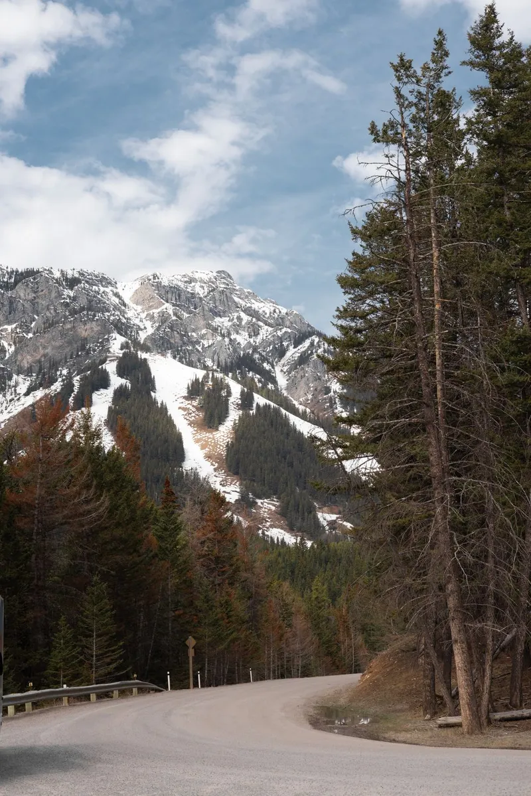
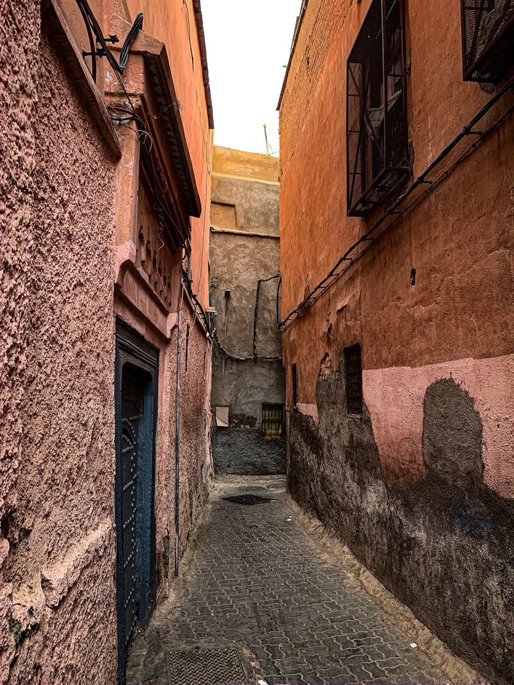
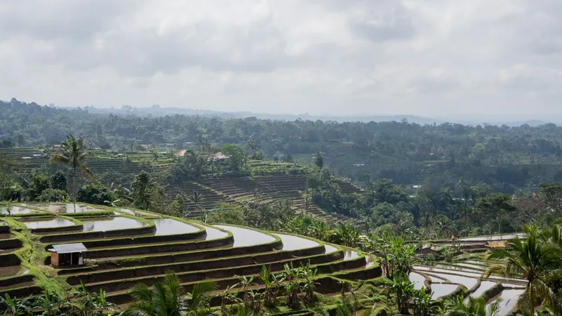
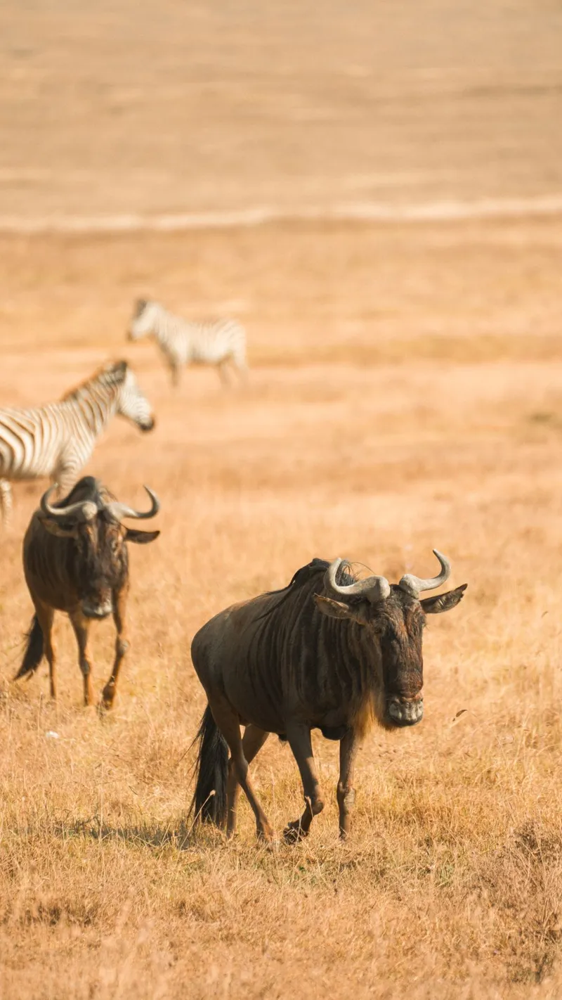
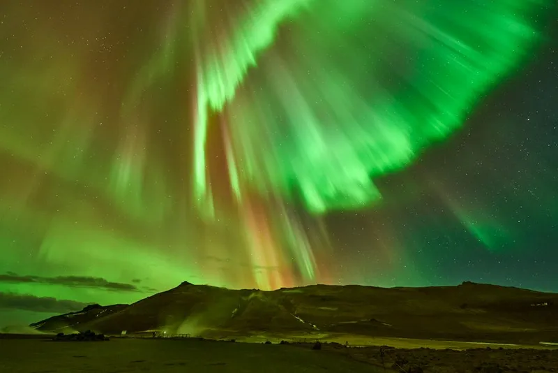

✈ Tailor-made trips · ATOL protected
Where’s your next story?
Tell us what you love, when you can go and what you want to spend. We’ll match you with places that fit, then plan every day.
- 4.9★ 5,800 trips
- 24/7 in-trip support
- 0 booking fees
Itinerary builder
Your days, planned.
Destinations
Eight places. One that’s yours.





Nothing matches all of that. Loosen the budget or month and we’ll find something.
Price estimator
What will it cost?
Smart packing list
Pack for Lisbon, not for “everything”.
0%
Plan with an expert
Real people. Who’ve been.
Every trip is planned by someone who has actually been there. We’ll turn your plan into a firm quote within one working day.
- MayaAsia & Pacific
- TomásEurope & Mediterranean
- KwameAfrica & wildlife
- IngridNordics & North America